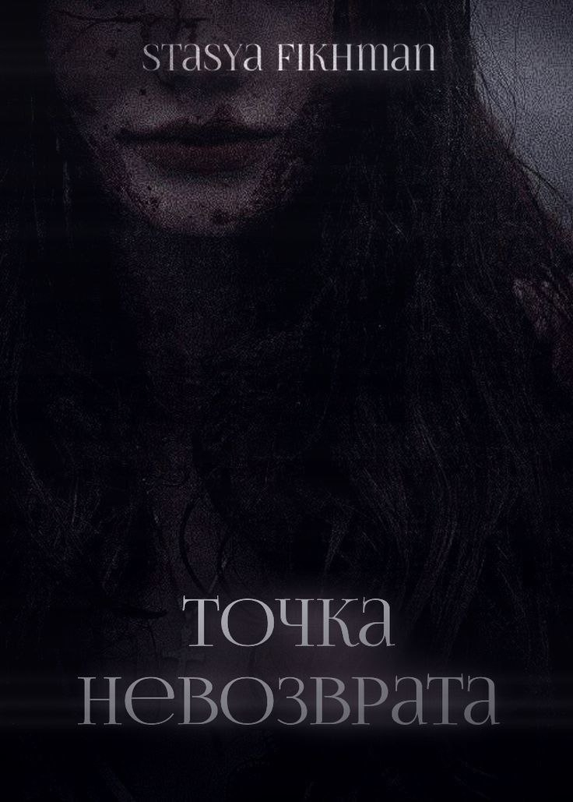

Точка невозврата
Она попала в Глэйд по ошибке. Первая девушка среди парней, которые ищут выход из этого проклятого места уже два года. Замечая за собой многочисленные взгляды, она готова гордо постоять за себя, но всё равно попадает в новые неприятности.
- Бегущий в лабиринте
- Минхо/ОЖП